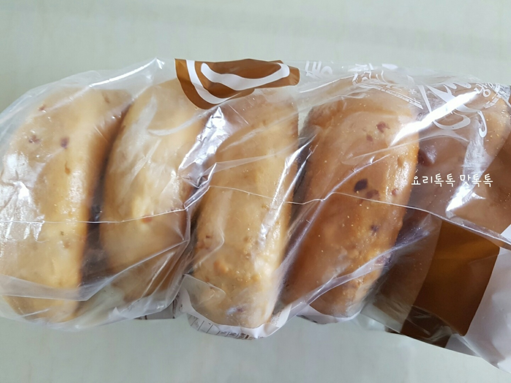
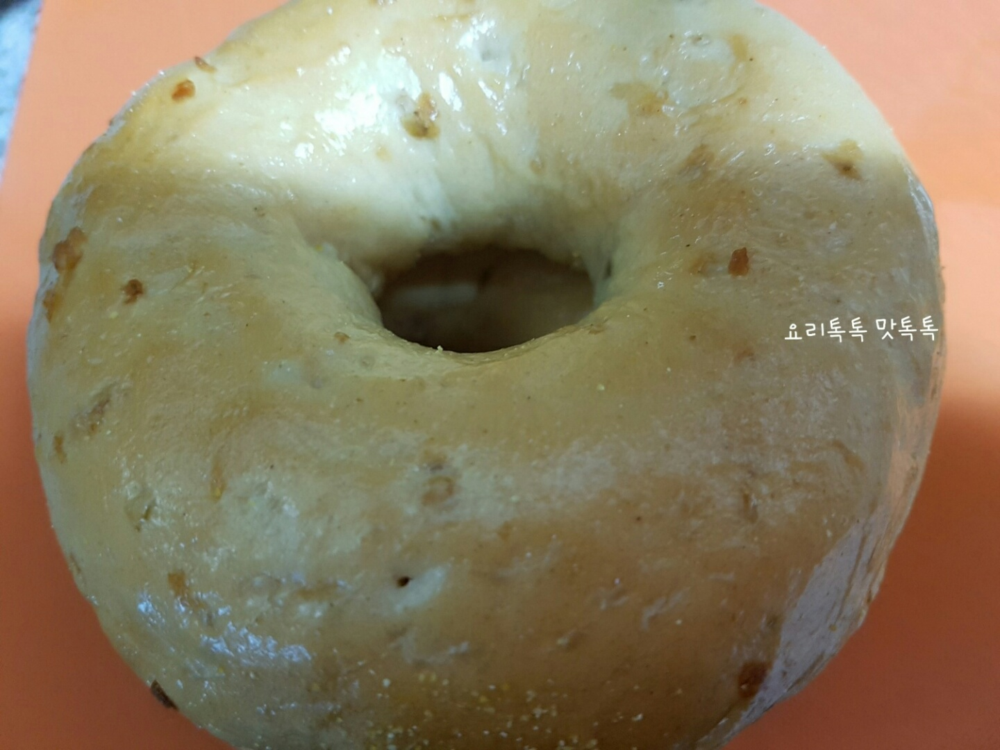
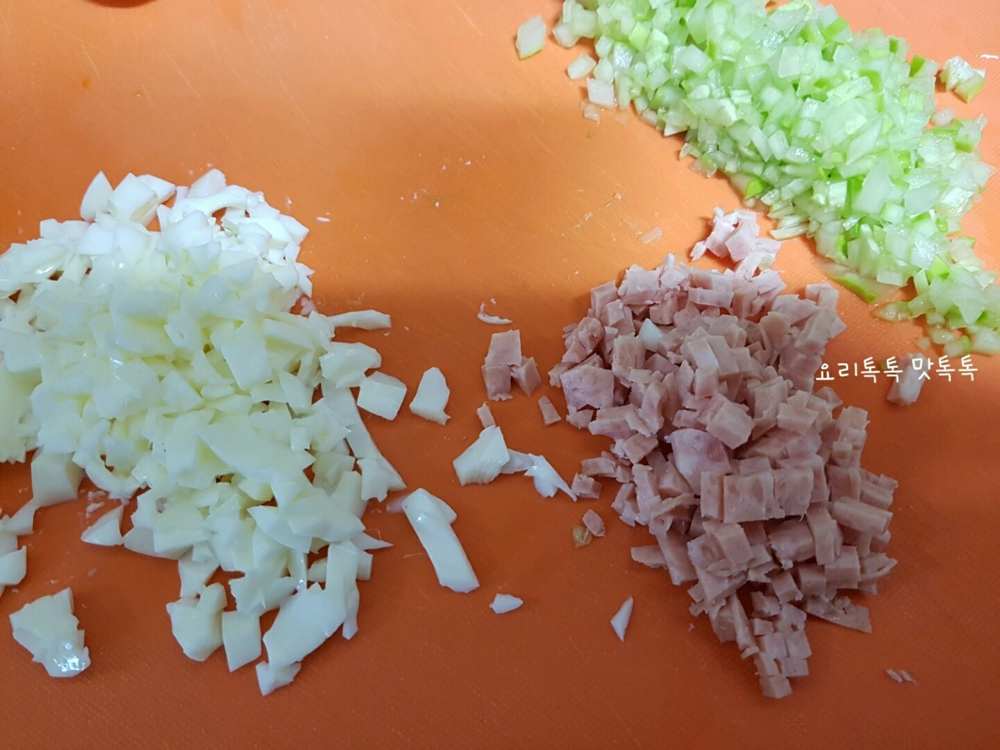
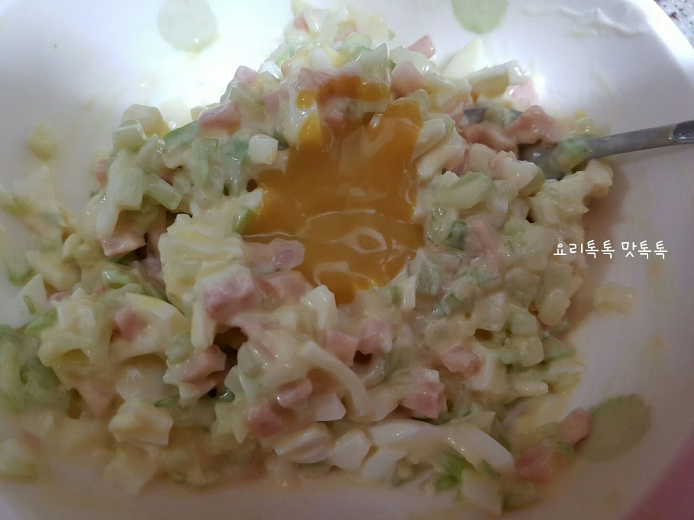
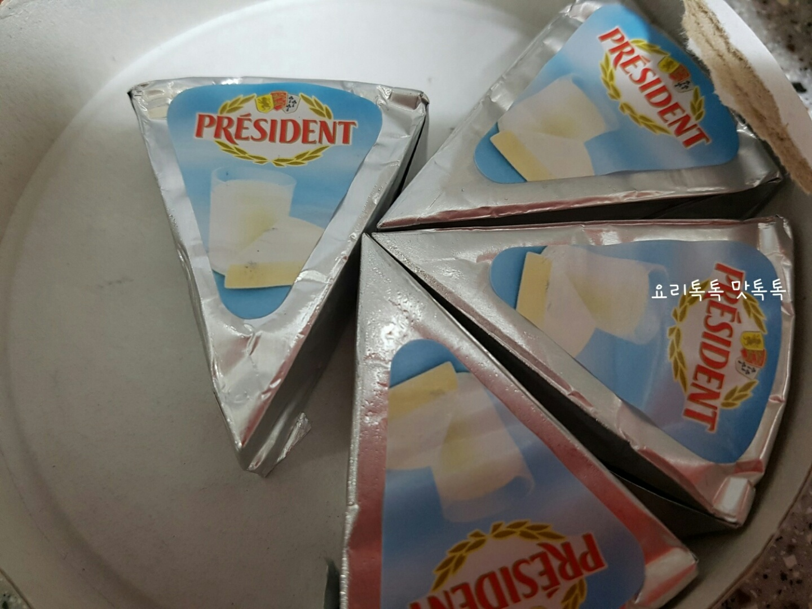

Ingredients
주 재료
베이글
2조각
오이
조금
삶은계란
1개
스팸
조금
양념
마요네즈
2
머스타드
1
메이플시럽
적당량
Steps
냉동 베이글을 해동합니다

반으로 자릅니다 팬에 오일없이 약불로 굽니다

오이 계란흰자 스팸을 잘게 다집니다 노른자는 으깨어 놓습니다

마요네즈 머스타드소스로 버무립니다

빵 한면에 크림치즈를 바릅니다

위에 소스에 버무린 소를 올립니다 그위에 노른자를 올립니다
위에 올릴 빵 한쪽면에 메이플시럽을 바릅니다
접시에 담아냅니다